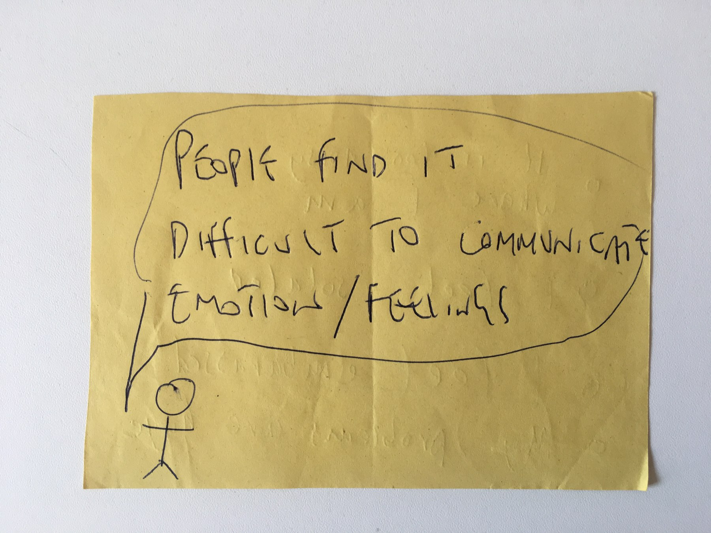

Co-designing better mental wellbeing

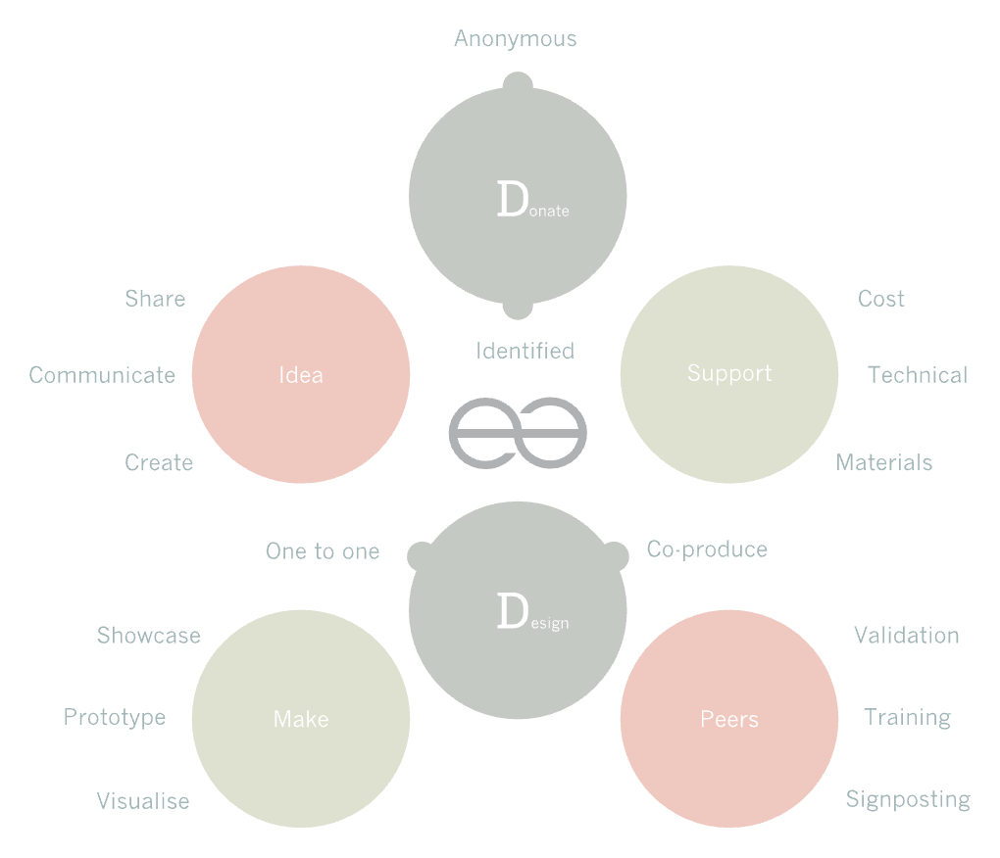
the iterated Bidean framework incorporating the co-design process
Bidean's mission was to generate concepts that support wellbeing and recovery by co-designing with people experiencing mental distress. I ran the project with Erika Renedo Illarregi, lead researcher and practitioner, funded by Paul Hamlyn Foundation's Ideas and Pioneers Fund.
co-design workshops
2 series evaluated
crowdfunding campaign
target reached
crowdfunded products
5 produced
project management & facilitation
01
Context and approach
As project manager and facilitator, I ran the day-to-day delivery of the grant: planning four co-design workshop programmes tailored to different research questions and organisational needs, and building a toolkit flexible enough to adapt on demand for whichever partner we were working with.
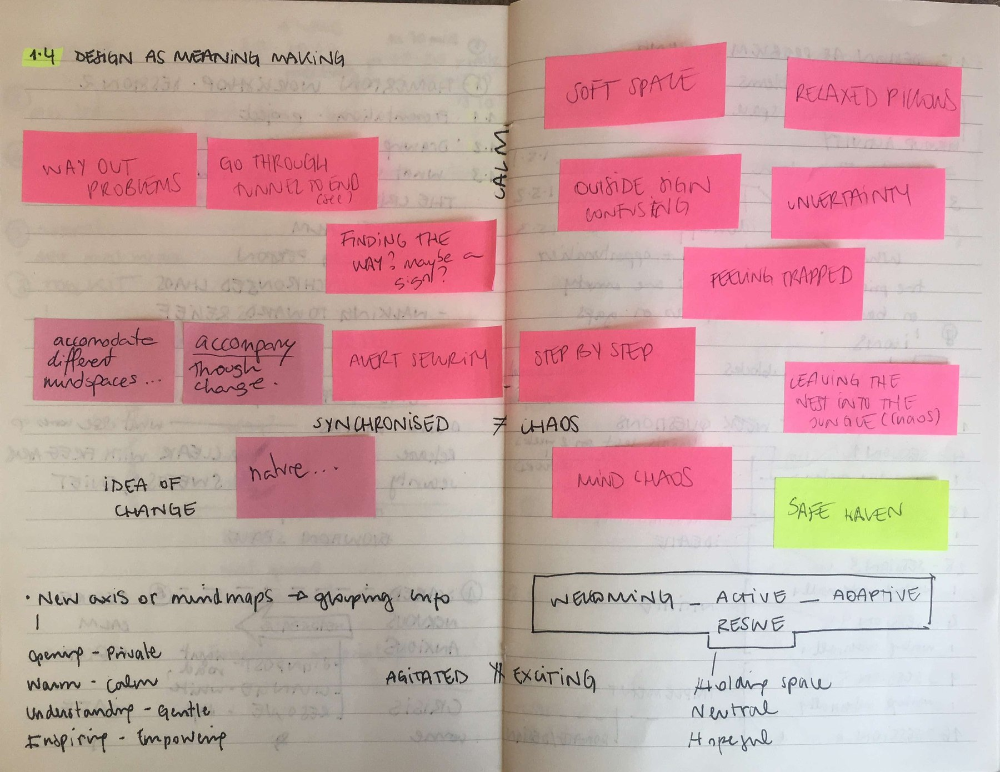
the starting insight and ideas taking shape
co-design delivery
02
Two workshop series, two very different formats
The first ran with Homerton Hospital's Crisis Café, part of East London Foundation Trust — six weeks, with a constantly changing drop-in group rather than a fixed cohort, reflecting how the service itself actually worked. The sessions led to real recommendations the Trust acted on, and the café went under improvement as a direct result.
The second ran at the Dragon Café over five weeks, producing five crowdfunded products designed with participants — among them a ring meant to bring someone back to a calm place, and a teapot designed to start difficult conversations more gently.
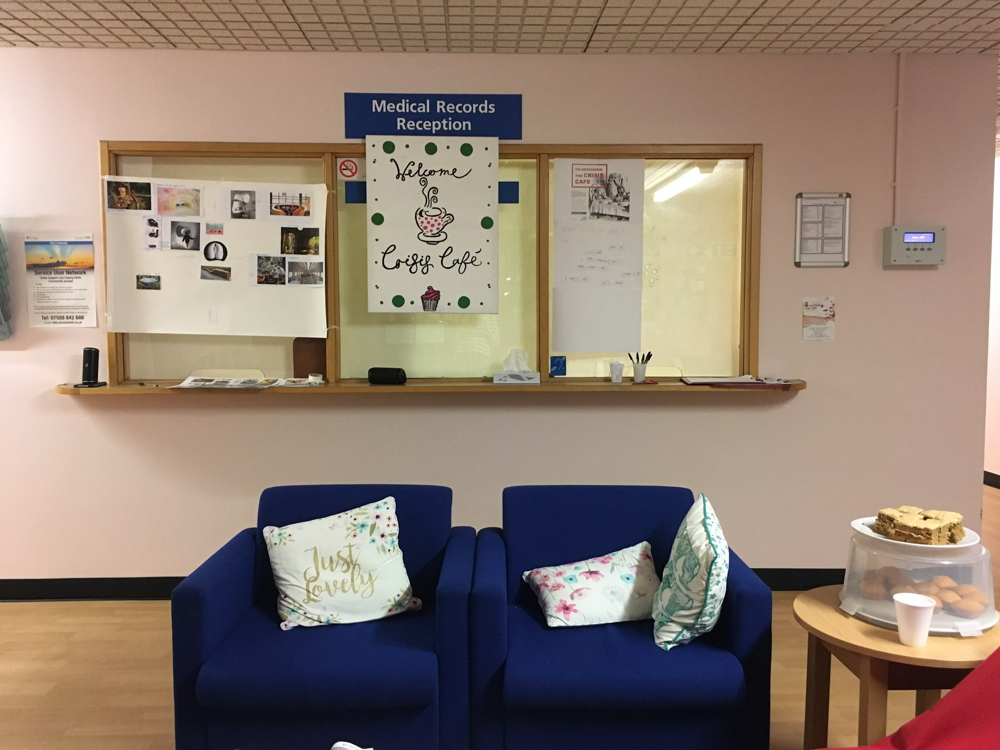
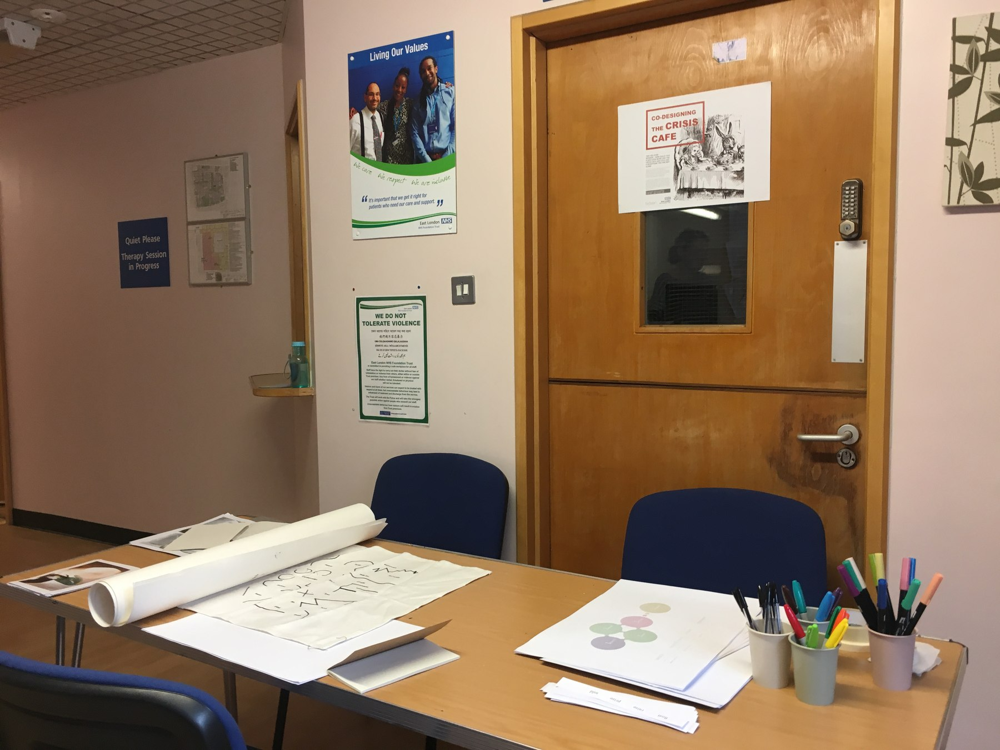
the Crisis Café at Homerton Hospital — sessions set up inside the service, around the drop-in group that was there each week
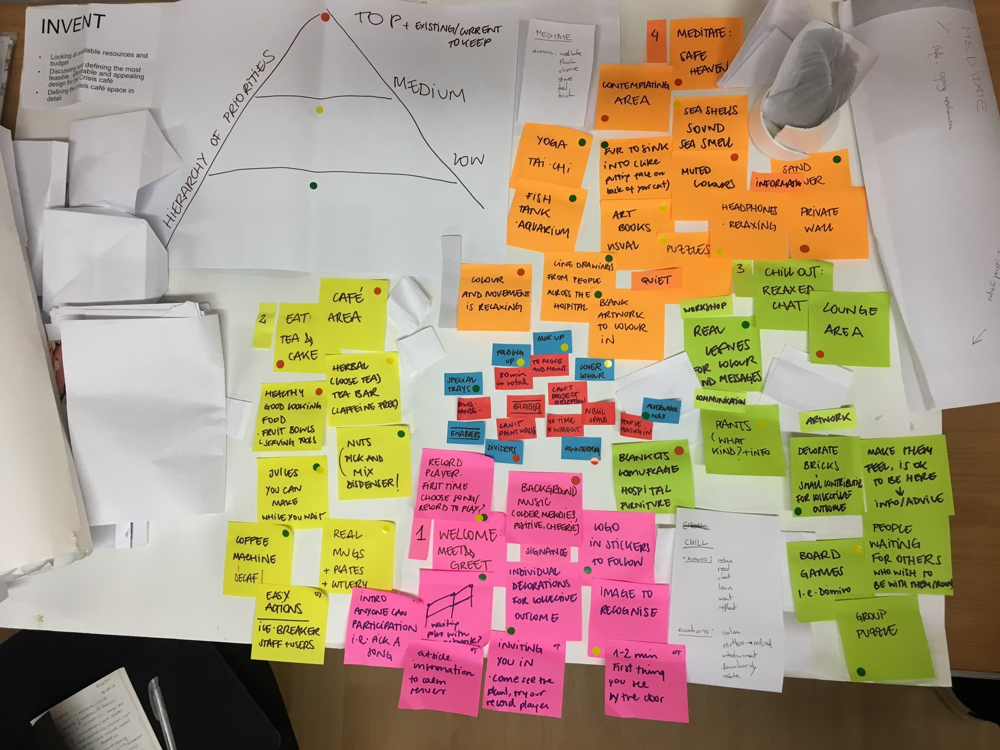
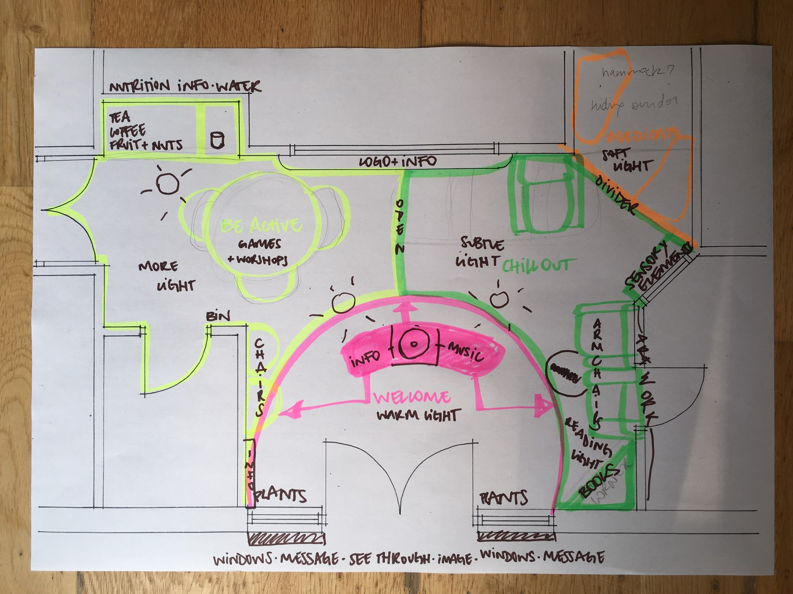
from prioritised ideas to a redesigned floor plan — recommendations the Trust acted on
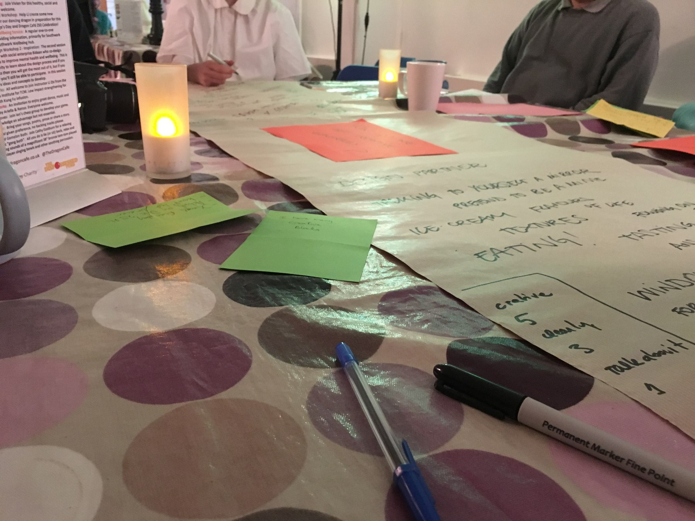
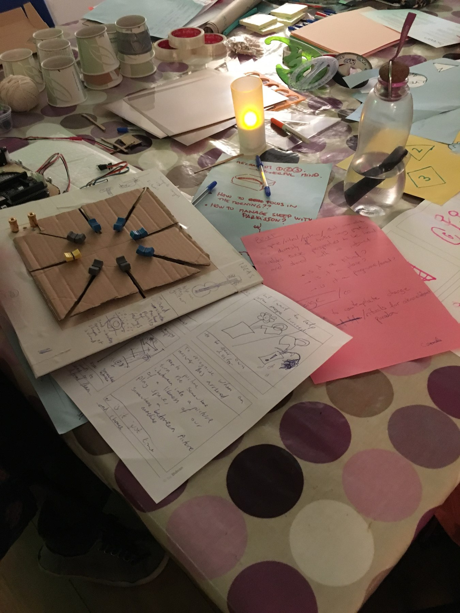
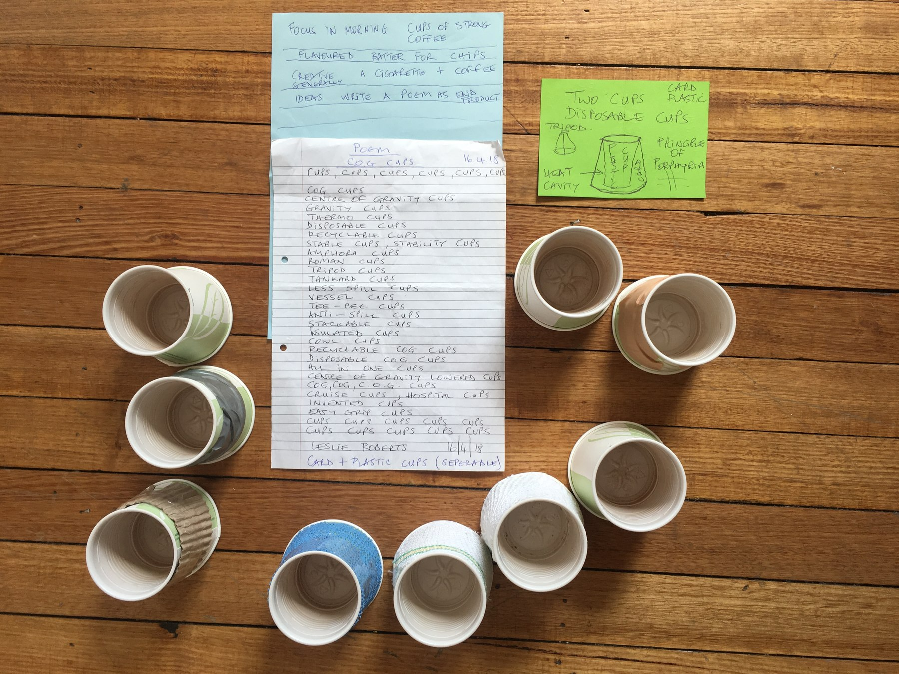
Five weeks at the Dragon Café — prototyping around candle-lit tables, and the products that emerged with their participants' own words
reflections
03
What we learned
The biggest barrier wasn't interest. Every charity and NHS trust we approached was genuinely receptive, but few had the funding or capacity to commit once the early meetings were over, and we couldn't recruit service users or run risk assessments ourselves to work around them directly. That gap became the clearest lesson from the grant: recruiting a psychologist who could handle risk assessment directly would let us stop depending on partner organisations' own stretched resources. Alongside the workshops and the campaign, we also built a volunteer scheme with a proper legal agreement, already in use with our first volunteers by the end of the grant.
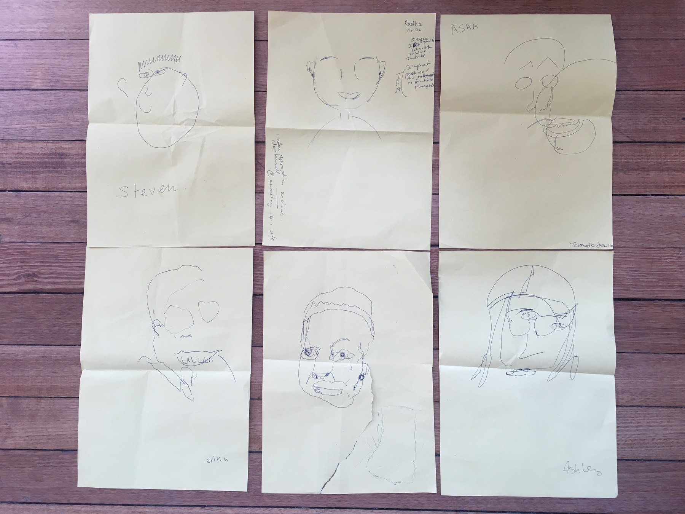
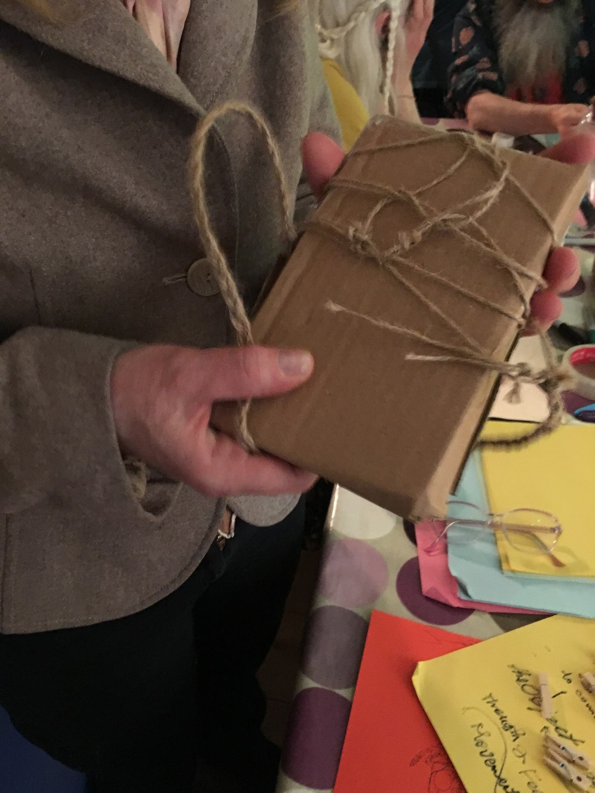
the small rituals that made the rooms safe, such as blind portraits to break the ice, and prototypes shows
outcome
We ran a crowdfunding campaign to produce 5 co-designed products, and passed our £5,000 target with 65 supporters in 30 days.
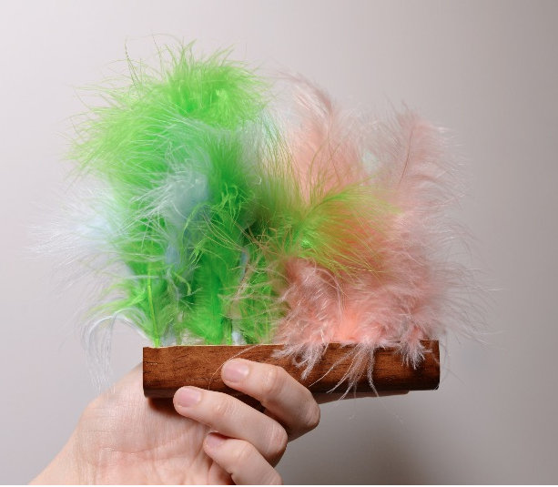
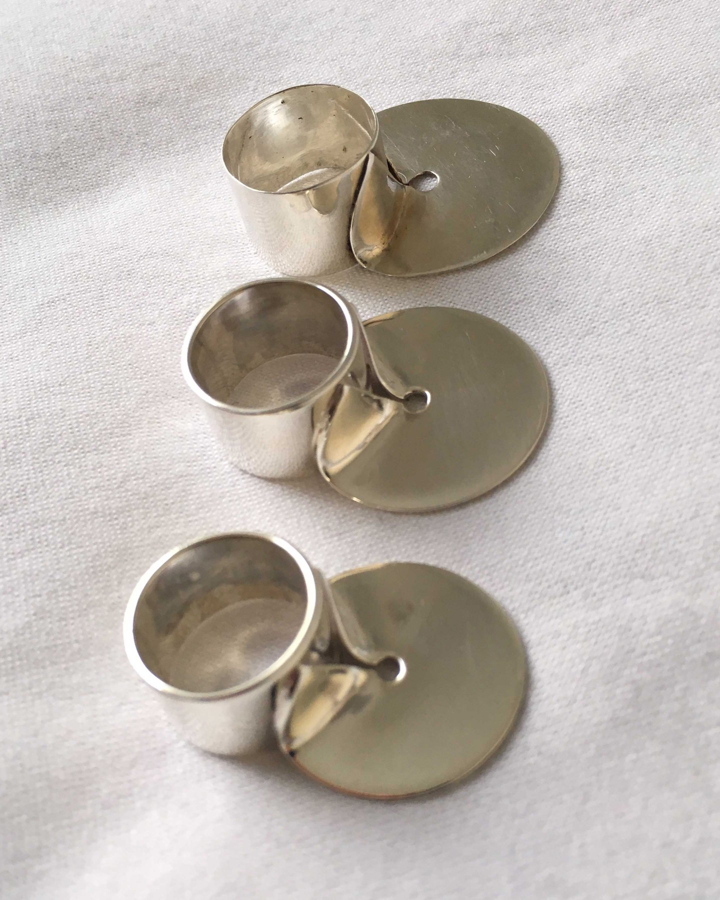
two of the five crowdfunded products — the electrostatic aura fluffer, and the calm ring designed to bring someone back to a calm place